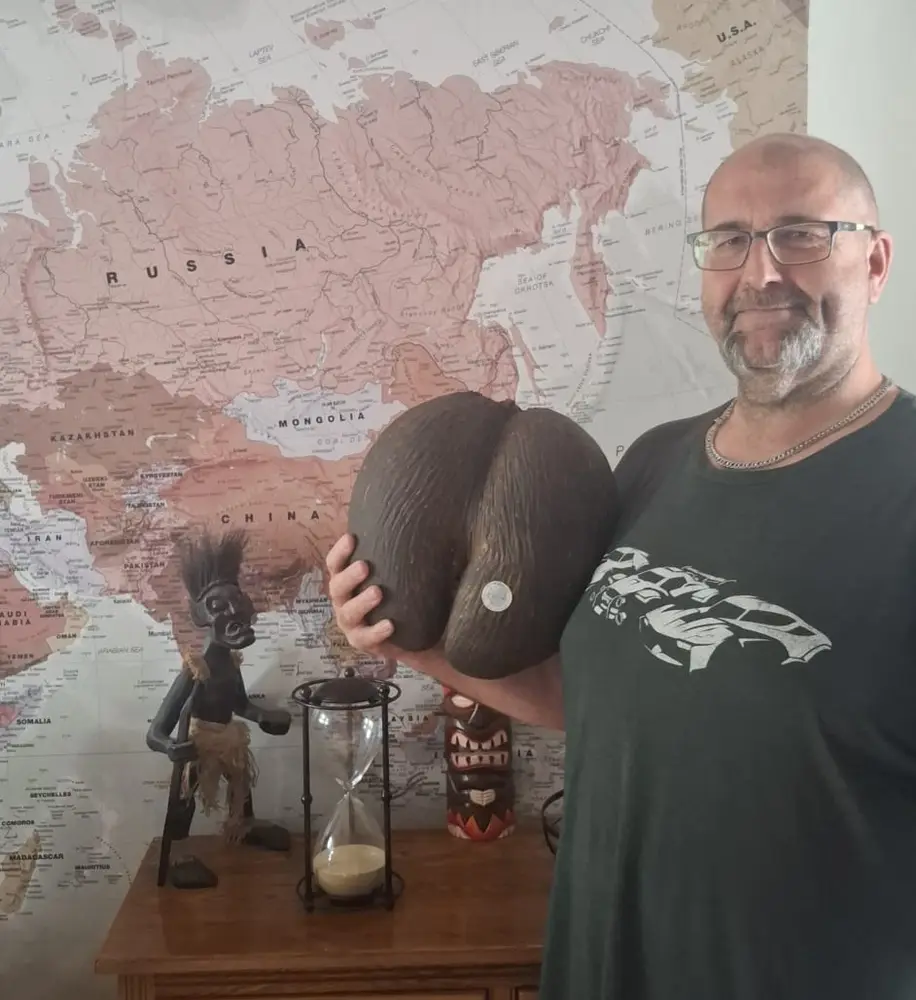

Buying aCoco de Mer,step by step.
Everything you need to know before you reserve: how it works, the paperwork that travels with your nut, shipping, and the questions we're asked most.
No payment online.We take care of the rest.
Reserve
Pick a nut and press “Reserve this nut”. Send your name, email and country. It's marked Reserved straight away, so no one else can take it.
Invoice
We reply with an invoice that includes shipping to your country. Nothing is charged until you approve it.
Paperwork
Once paid, we prepare your certificate and export permit, matched to your nut's registration number.
Delivery
Collect it from our shop on Mahé, or we pack it carefully and send it to you by international courier.
Want to see more first? Ask about any nut on WhatsApp and we'll send extra photos or a video. Chat with us
What comes withyour nut.
The Coco de Mer is protected, so every legal sale is registered with the Seychelles government. These three things prove yours is genuine and let it travel.
Certificate of authenticity
Confirms your Coco de Mer is genuine and records its registration number.
Government seal
A numbered holographic seal fixed to the nut. The number matches your certificate and permit.
Export permit
Allows the nut to leave Seychelles legally, whether it's shipped or packed in your luggage.
From Mahé toyour door.
We ship worldwide by international courier and quote the cost on your invoice, so you know the full price before you pay.

“Sharon shared photos of all the paperwork and a video of the nut being securely packed. It arrived safely in the UK.”Karl · United Kingdom
DHL or FedEx, with tracking details sent to you by email.
Usually 1–3 business days after payment, including your paperwork.
Usually 3–10 business days, depending on your country.
Visiting Seychelles? Collect your nut from our shop at Au Cap, Monday to Saturday.
Import rules vary by country. It's worth checking with your local customs before ordering, and we're glad to help.
One of a kind,final sale.
Because every nut is unique and leaves Seychelles with export paperwork in its own registration number, all sales are final and we can't accept returns or exchanges.
That's why we encourage you to ask as many questions as you like before reserving. We're always happy to send more photos, a video, or to help you compare nuts.
Can I take a Coco de Mer home with me?
Yes. Every nut we sell is registered and sealed, and comes with the certificate and export permit you need to take it out of Seychelles legally, whether you carry it home in your luggage or we ship it to you.
How does reserving work?
There is no payment online. Send us your details and the nut is held for you straight away. We reply with an invoice that includes shipping to your country, then prepare the paperwork once you have approved it.
Do you ship worldwide?
Yes. We send nuts by international courier (DHL or FedEx) and quote the shipping cost on your invoice. Orders are usually prepared within 1–3 business days and arrive within 3–10 business days of shipping.
What paperwork comes with my nut?
A certificate of authenticity, the government seal fixed to the nut with its own registration number, and an export permit. The registration number on the seal matches the number on your certificate and permit.
Will my own country let it in?
We provide everything Seychelles requires for export. Import rules differ from country to country, so it's worth checking with your local customs before you order. Our journal post on proper documentation explains what to look for, and we're happy to help on WhatsApp.
Can I see a nut in person before I buy?
Of course. Our shop at Domaine de Val des Prés, Au Cap, is open Monday to Saturday (closed Sundays). There's no need to book; come in and choose your nut in person, and join a free factory tour while you're here.
Can I return my nut?
Because every nut is one of a kind and leaves Seychelles with its own export paperwork, all sales are final. That's why we're happy to send extra photos or a video of any nut before you reserve it.
How do I order the kernel?
Choose your cuts on The Kernel page and send an order request. The minimum order is 1 kg. We reply with an invoice that includes shipping to your country.
Is a Coco De Mer Bowl the same as a nut?
A Coco De Mer Bowl is a polished, hand-finished piece carrying its own gold registration seal (G-series numbers). Like our nuts, each one is certified and comes with its paperwork.
Talk to areal person.
The family behind every nut answers these. To hold a specific nut, use Reserve on its page so it's set aside for you.
Domaine de Val des Prés, Craft Village
Au Cap, Mahé, Seychelles
Monday to Saturday
Closed on Sundays
Free, no booking needed.
Just drop in while we're open.